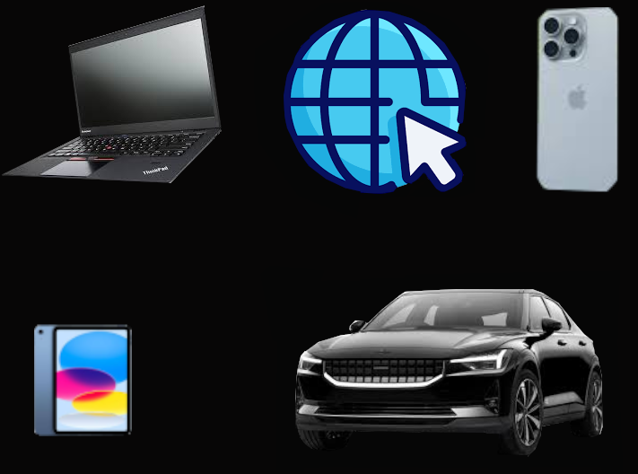

Nos Services

Service d'immigration au Canada
Nous accompagnons nos clients à chaque étape de leur projet d'immigration pour réaliser leur rêve au Canada.

Services informatiques
Nous offrons des services comme la création de sites web, la conception graphique, la gestion de bases de données, et bien plus.
Studio photo
Notre studio propose des séances photo professionnelles pour vos besoins, que ce soit pour des portraits ou des événements.